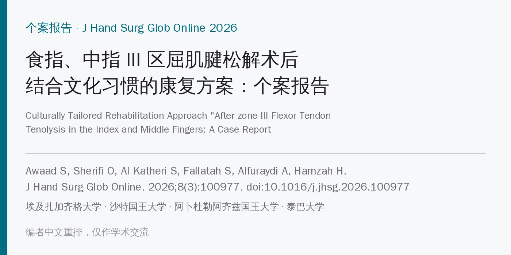
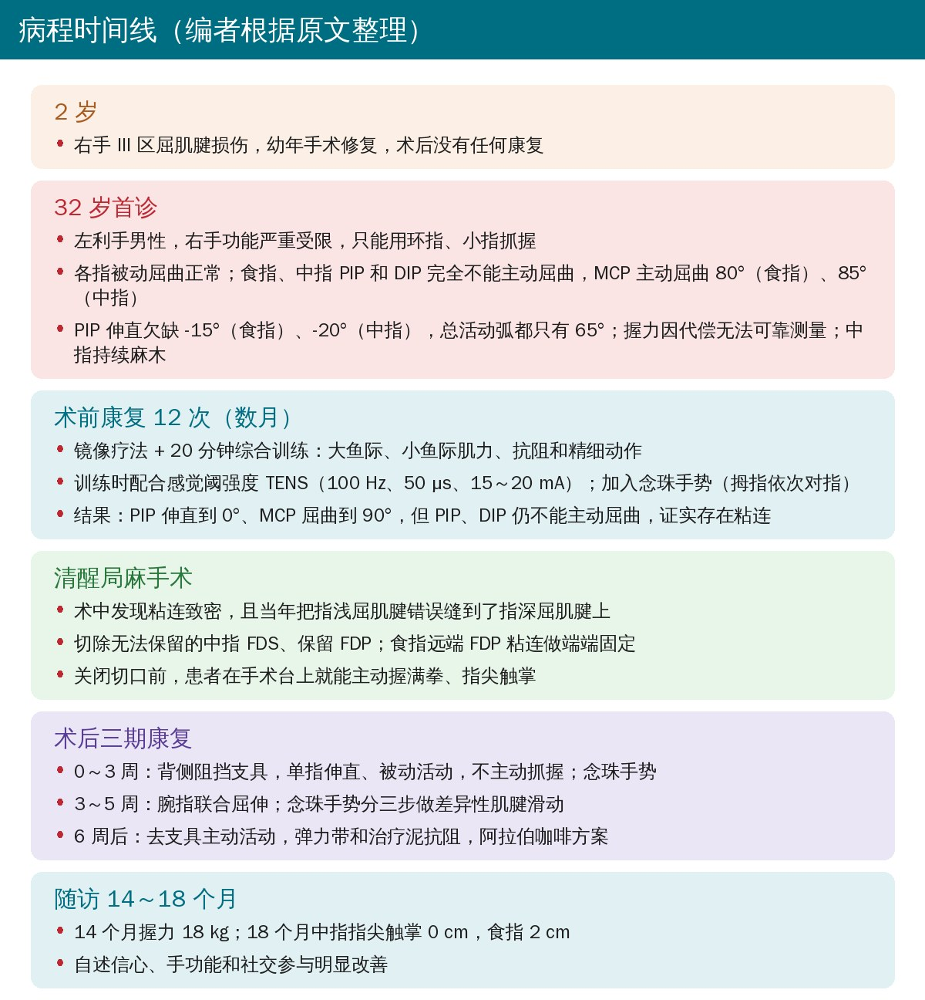
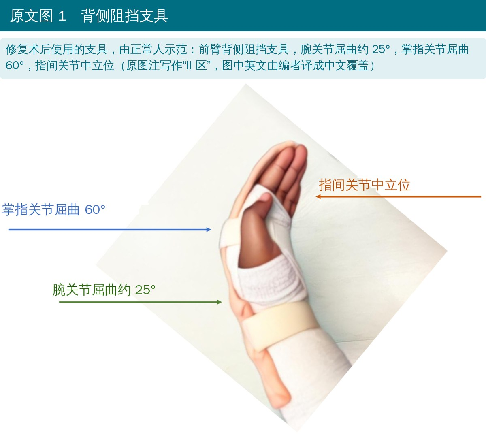
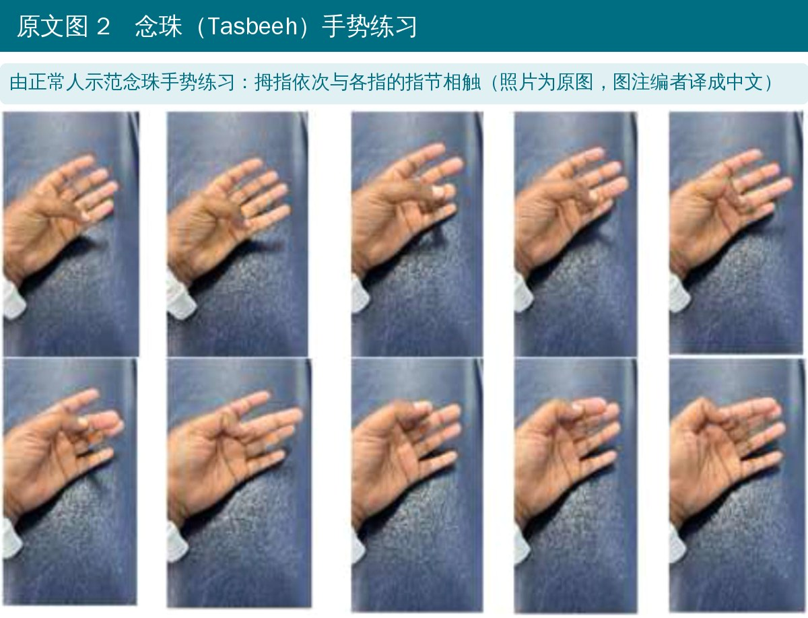
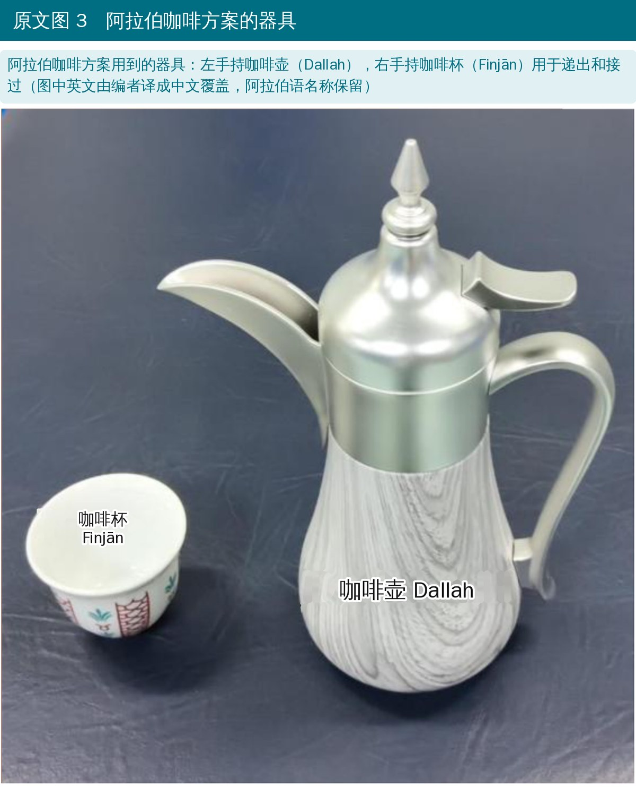
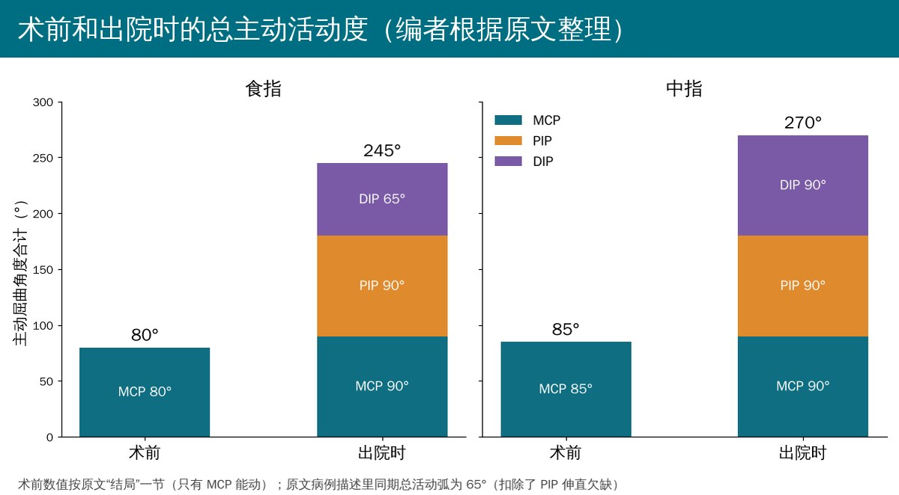
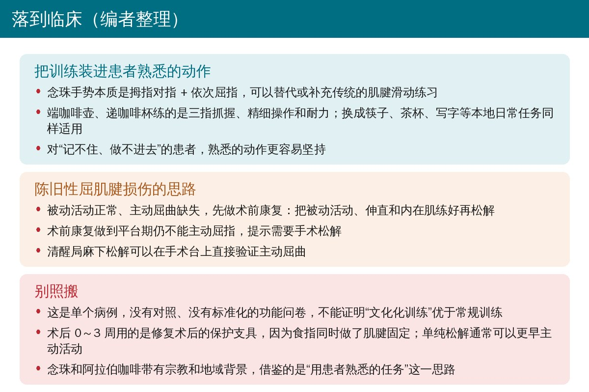

🔖原文信息（编者中文重排）
📚 文献信息
▪ Awaad S, Sherifi O, Al Katheri S, Fallatah S, Alfuraydi A, Hamzah H. Culturally tailored rehabilitation approach "after zone III flexor tendon tenolysis in the index and middle fingers: a case report. J Hand Surg Glob Online. 2026;8(3):100977. doi:10.1016/j.jhsg.2026.100977
▪ 中文题目：食指、中指 III 区屈肌腱松解术后结合文化习惯的康复方案：个案报告
▪ 作者来自埃及扎加齐格大学和艾因夏姆斯大学、沙特国王大学、阿卜杜勒阿齐兹国王大学、泰巴大学
▪ 研究类型：个案报告
• III 区（手掌区，屈肌支持带远端到 A1 滑车近端）屈肌腱损伤解剖复杂，粘连风险高，常留下明显的功能障碍
• 保守治疗无法恢复肌腱滑动和手的活动时，通常需要手术松解
• 在阿拉伯文化中，右手用于握手、吃饭和拿东西等社交性活动，左手用于个人清洁；右手受伤不只是功能问题，还会招来异样眼光和心理压力
• 报告目的：描述一例屈肌腱松解术，以及一套结合患者文化中惯用手部动作的康复方案

🔖编者根据原文整理
• 患者：32 岁左利手男性，2 岁时右手 III 区屈肌腱损伤，幼年手术修复后没有任何康复，食指、中指形成致密粘连
• 首诊评估：各指被动屈曲正常；食指、中指 PIP、DIP 完全不能主动屈曲；MCP 主动屈曲 80°（食指）、85°（中指）；PIP 伸直欠缺 -15°、-20°；总活动弧都只有 65°；用 8 字法测手围比健侧小 3 cm；中指持续麻木
• 术前康复：数月共 12 次。每次镜像疗法 + 20 分钟综合训练（大小鱼际肌力、抗阻、精细动作），训练时用双通道 TENS，100 Hz、50 μs、感觉阈强度 15～20 mA，不引起肌肉收缩；动作包括念珠手势（拇指依次对指）、耐受范围内握力训练、抓放物体
• 术前康复结果：PIP 伸直到 0°，内在肌力量增加，MCP 屈曲到 90°，但 PIP、DIP 仍不能主动屈曲，证实存在限制性粘连
• 手术：清醒局麻、上止血带。切开腕横韧带后见远端致密粘连，且当年把指浅屈肌腱（FDS）错误缝到指深屈肌腱（FDP）上；保护神经，松解屈肌支持带，由近向远松解；未显露 A1 滑车。中指 FDS 无法保留予以切除、保留 FDP；食指远端 FDP 粘连做端端固定。关闭切口前确认两指能完全主动屈曲
| 阶段 | 内容 |
|---|---|
| 早期（0～3 周） | 背侧阻挡支具（腕屈约 25°、MCP 屈 60°、指间关节中立位）；单指伸直练习、腕和手指被动活动，不做主动抓握；念珠手势，引导 MCP、PIP、DIP 依次屈曲 |
| 中期（3～5 周） | 腕指联合屈伸，改善协调和肌腱滑动；念珠手势分三步做差异性肌腱滑动：伸直 → 桌面位（MCP 屈、指间关节伸），伸直 → PIP 屈曲，伸直 → 钩拳 |
| 后期（6 周后） | 去支具主动活动；弹力带和治疗泥抗阻；阿拉伯咖啡方案：左手持咖啡壶、右手递接咖啡杯，练三指抓握、手指操作、灵巧性和耐力 |

🔖原文图 1（编者把图中英文译成中文）

🔖原文图 2（照片为原图，图注编者译成中文）

🔖原文图 3（编者把图中英文译成中文）
• 术前：不能做功能性抓握，只有环指、小指能主动屈曲；食指、中指只有 MCP 能动，总主动活动度 80° 和 85°；握力几乎为零
• 术中：清醒局麻下，患者在手术台上就能按指令握满拳、指尖触掌，只是力量较弱
• 出院时：总主动活动度食指 245°（MCP 90°、PIP 90°、DIP 65°），中指 270°（MCP 90°、PIP 90°、DIP 90°）
• 14 个月：握力 18 kg，从只靠环指、小指抓握转为多指抓握
• 18 个月：中指指尖触掌距离 0 cm，食指 2 cm；患者自述信心、手功能和社交参与明显改善

🔖编者根据原文整理
• 陈旧性 III 区屈肌腱损伤的难点在慢性粘连、肌力下降和心理社会影响；松解术加文化化康复能明显提高功能恢复和患者参与度
• 念珠手势和阿拉伯咖啡方案利用的是患者早已熟悉的动作模式，在促进肌腱滑动和精细协调的同时，也比传统练习更直观、好记
• III 区损伤会破坏内在肌和外在肌之间的协调，文化上熟悉的动作对功能重建尤其有价值
• 作者承认这是单病例、缺少标准化对照数据，需要更大样本验证可推广性和长期心理社会获益
• 个案报告，证据等级最低：只能说明这套做法在这个人身上可行，不能说明文化化训练比常规训练更好
• 疗效主要来自手术：术前康复做到平台期都不能屈 PIP、DIP，松解后在手术台上就能握满拳，康复的贡献难以和手术分开
• 结局指标单薄：只有活动度、握力和指尖触掌距离；没有 DASH、PRWHE 等功能问卷，没有健侧握力对照，“信心和社交改善”是患者自述
• 随访记录不完整：出院时间没写，出院时的伸直欠缺没报告，14 个月和 18 个月各只给了部分指标
• 亮点值得借鉴：清醒局麻下即时验证主动屈曲，以及把训练装进患者每天都做的动作里，提高依从性
• II 区还是 III 区：题目和正文都是 III 区，图 1 图注却写“Zone II tendon repair”使用的支具
• 术前活动度两个数：病例描述里总活动弧是 65°（MCP 屈曲减去 PIP 伸直欠缺），结局和讨论里却用 80°、85° 作为术前值；而术前康复结束时 MCP 已到 90°、PIP 伸直已到 0°，真正的“术前”值应是 90°
• III 区手术却切开腕横韧带：腕管属于 IV 区，原文没解释为何要向近端扩大到腕管
• “端端肌腱固定”说法含糊：食指远端 FDP 粘连“需要端端 tenodesis”，tenodesis 一般指把肌腱固定到骨上，端端吻合应是 tenorrhaphy，具体做法不清楚
• 早期“不主动抓握”和念珠手势矛盾：0～3 周要求不做主动抓握，同时又安排需要主动屈指的念珠手势
• “手体积”实测的是周径：8 字法测的是手的周径（cm），原文写成 hand volume
• 参考文献对不上：支持念珠手势促进肌腱滑动的文献 10、11 是阿拉伯语版 PRWHE 和 CHEQ 问卷的跨文化调适研究，与运动效果无关；且全文没有使用这些问卷
• 标题标点：题目中多了一个未闭合的引号

🔖编者整理
• 先分清被动和主动：被动屈曲正常、主动屈曲缺失，提示粘连或肌腱连续性问题；先做术前康复，把伸直、被动活动和内在肌练好
• 术前康复有“终点”：练到平台期仍不能主动屈 PIP、DIP，就该转手外科考虑松解，而不是无限期练下去
• 术后方案看手术做了什么：单纯松解通常强调早期主动滑动以防再粘连；同时做了肌腱修复或固定时，要按修复方案保护
• 差异性肌腱滑动：桌面位、直拳（PIP 屈）、钩拳三种姿势分别侧重内在肌、FDS 和 FDP 的滑动，可以和患者熟悉的动作结合起来做
• 任务要“本地化”：念珠和阿拉伯咖啡是作者的文化背景；在国内可以换成用筷子、端茶杯、捻佛珠、写毛笔字等患者每天在做的事
原文没有表格。下面是正文出现的术语对照，供阅读参考。
| 英文 | 中文 | 说明 |
|---|---|---|
| Zone III | III 区 | 手掌区，屈肌支持带远端到 A1 滑车近端 |
| Tenolysis | 肌腱松解术 | 切除肌腱周围粘连，恢复滑动 |
| FDS / FDP | 指浅屈肌 / 指深屈肌 | 分别主要屈 PIP 和 DIP |
| Dorsal blocking orthosis | 背侧阻挡支具 | 限制腕、MCP 伸直，保护修复的屈肌腱 |
| Total active motion（TAM） | 总主动活动度 | MCP + PIP + DIP 主动屈曲之和减去伸直欠缺 |
| Extension lag | 伸直欠缺 | 主动伸直不到被动能达到的角度 |
| Wide-awake local anesthesia | 清醒局麻 | 不用全麻和镇静，术中可让患者主动活动验证效果 |
| Tasbeeh | 念珠手势 | 源自祈祷计数，拇指依次与各指指节相触 |
| Dallah / Finjān | 阿拉伯咖啡壶 / 咖啡杯 | 阿拉伯咖啡方案用到的器具 |
| Mirror therapy | 镜像疗法 | 看镜中健手动作，促进患手运动表象 |
欢迎关注骨科康复小黄公众号，获取更多物理治疗的专业知识！
📄参考文献：
Awaad S, Sherifi O, Al Katheri S, Fallatah S, Alfuraydi A, Hamzah H. Culturally tailored rehabilitation approach "after zone III flexor tendon tenolysis in the index and middle fingers: a case report. J Hand Surg Glob Online. 2026;8(3):100977. doi:10.1016/j.jhsg.2026.100977
本文为中文解读，仅作学术交流：照片引自原文图 1～图 3（图 1、图 3 中的英文由编者译成中文覆盖原位置，图注由编者译成中文），病程时间线卡、活动度图和临床卡为编者根据原文整理。原文 © 2026 The Authors，由 Elsevier 代表美国手外科学会出版，采用 CC BY-NC-ND 4.0 许可。